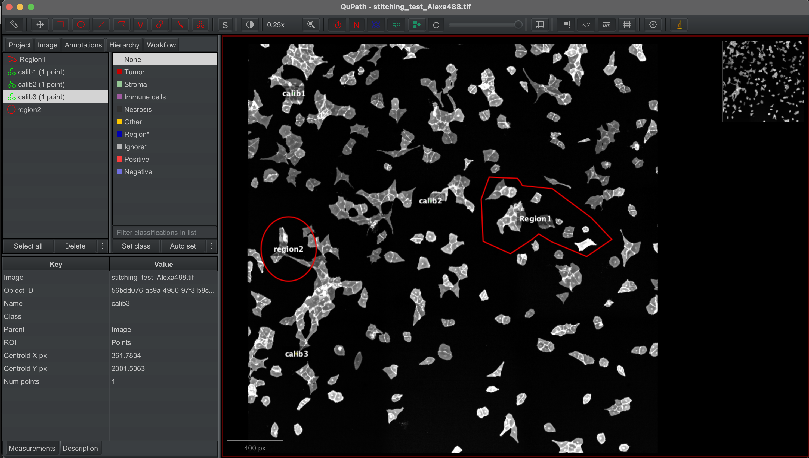
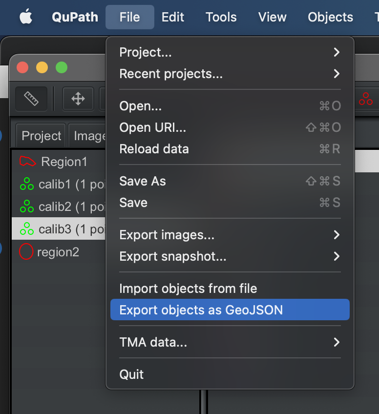
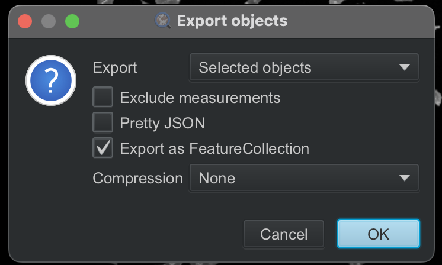

3.2. Generate cutting XML from exported results from QUPath
The stitched images were loaded into Qupath and specific regions annotaed by hand. calibration points were also selected and labelled with calib1, calib2 and calib3.

The annotated shapes were then exported to geojson file.
 
3.2.1. Import libraries and define helper functions
[1]:
# import required libraries
import json
import geojson
import geopandas
import pandas as pd
import numpy as np
from lmd.lib import Collection, Shape
/Users/sophia/mambaforge/envs/pylmd_docs/lib/python3.10/site-packages/tqdm/auto.py:21: TqdmWarning: IProgress not found. Please update jupyter and ipywidgets. See https://ipywidgets.readthedocs.io/en/stable/user_install.html
from .autonotebook import tqdm as notebook_tqdm
[2]:
#define helper functions
def get_calib_points(list_of_calibpoint_names, df):
#create shape list
pointlist = []
for point_name in list_of_calibpoint_names:
pointlist.append(df.loc[df['name'] == point_name, 'geometry'].values[0])
#create coordinate list
listarray = []
for point in pointlist:
listarray.append([point.x, point.y])
nparray = np.array(listarray)
return(nparray)
#returns dataframe with only polygon objects
def remove_non_polygons(df):
import shapely
df_filtered = df.loc[[type(x) == shapely.geometry.polygon.Polygon for x in df.geometry]]
return(df_filtered)
#creates new column for coordenates in a list of list format
#assumes only polygons in dataframe
def replace_coords(df):
df['coordinates_shape_exterior'] = np.nan
df['coordinates_shape_exterior'] = df['coordinates_shape_exterior'].astype('object')
for i in df.index:
#get geometry object for row i
geom = df.at[i, 'geometry']
#list the coordinate points as tuples
tmp = list(geom.exterior.coords)
#transform list of tuples to list of lists and save to dataframe
df.at[i,'coordinates_shape_exterior'] = [list(i) for i in tmp]
return(df)
3.2.2. Import GEOjson regions
The geojson dataset is loaded into a dataframe with the following structure:
id objectType classification name geometry unique shape id type of shape (e.g. annotation) all annotation information from qupath shape name if given contains information relevant for shape
The geojson should besides containing individual segemnted shapes contain 3 points annotated as calib1, calib2, calib3 that will be used as calibration points for generating the XML
[3]:
df = geopandas.read_file("test_data/cellculture_example/annotated_regions_Qupath.geojson")
df
Skipping field color: unsupported OGR type: 1
[3]:
| id | objectType | name | geometry | |
|---|---|---|---|---|
| 0 | 9287277d-e46f-47e9-aa3f-c540b3318b5e | annotation | region2 | POLYGON ((507 1524, 506.6 1539.01, 505.39 1553... |
| 1 | ab63cfd3-17d0-4dd3-b8e6-95172dda64de | annotation | Region1 | POLYGON ((1789 990, 1730 1153, 1744 1467, 1944... |
| 2 | b60d2cf7-963e-42ae-8a2a-69ff289d29db | annotation | calib1 | POINT (343.24 368.53) |
| 3 | 56bdd076-ac9a-4950-97f3-b8c2268ee090 | annotation | calib3 | POINT (361.78 2301.51) |
| 4 | 03d9bb6e-16b1-4cd9-9181-86da90fb98bf | annotation | calib2 | POINT (1353.77 1165.83) |
3.2.3. Calibration points
[4]:
#assumes user will always label their calibration points like this
caliblist = get_calib_points(['calib1','calib2','calib3'],df)
print(caliblist)
[[ 343.24 368.53]
[1353.77 1165.83]
[ 361.78 2301.51]]
3.2.4. Clean up Dataframe
Remove non-polygon shapes, extract polygon coordinates, and parse annotation for easier use
[5]:
df_poly = remove_non_polygons(df)
df_poly = replace_coords(df_poly)
df_poly
/Users/sophia/mambaforge/envs/pylmd_docs/lib/python3.10/site-packages/geopandas/geodataframe.py:1819: SettingWithCopyWarning:
A value is trying to be set on a copy of a slice from a DataFrame.
Try using .loc[row_indexer,col_indexer] = value instead
See the caveats in the documentation: https://pandas.pydata.org/pandas-docs/stable/user_guide/indexing.html#returning-a-view-versus-a-copy
super().__setitem__(key, value)
/Users/sophia/mambaforge/envs/pylmd_docs/lib/python3.10/site-packages/geopandas/geodataframe.py:1819: SettingWithCopyWarning:
A value is trying to be set on a copy of a slice from a DataFrame.
Try using .loc[row_indexer,col_indexer] = value instead
See the caveats in the documentation: https://pandas.pydata.org/pandas-docs/stable/user_guide/indexing.html#returning-a-view-versus-a-copy
super().__setitem__(key, value)
[5]:
| id | objectType | name | geometry | coordinates_shape_exterior | |
|---|---|---|---|---|---|
| 0 | 9287277d-e46f-47e9-aa3f-c540b3318b5e | annotation | region2 | POLYGON ((507 1524, 506.6 1539.01, 505.39 1553... | [[507.0, 1524.0], [506.6, 1539.01], [505.39, 1... |
| 1 | ab63cfd3-17d0-4dd3-b8e6-95172dda64de | annotation | Region1 | POLYGON ((1789 990, 1730 1153, 1744 1467, 1944... | [[1789.0, 990.0], [1730.0, 1153.0], [1744.0, 1... |
3.2.5. Generate shape collection
[6]:
shape_collection = Collection(calibration_points = caliblist)
shape_collection.orientation_transform = np.array([[1,0 ], [0,-1]])
[7]:
for i in df_poly.index:
shape_collection.new_shape(df_poly.loc[i,'coordinates_shape_exterior'], well = "well1") # can define a well if so wished otherwise leave out
[8]:
#print some statistics on the shapes included in the collection and visualize results
print(shape_collection.stats())
shape_collection.plot(calibration = True)
===== Collection Stats =====
Number of shapes: 2
Number of vertices: 117
============================
Mean vertices: 58
Min vertices: 16
5% percentile vertices: 20
Median vertices: 58
95% percentile vertices: 97
Max vertices: 101
None
3.2.6. write to XML
[9]:
shape_collection.save("./test_data/cellculture_example/shapes_2.xml")
[ 34324. -36853.]
[ 135377. -116583.]
[ 36178. -230151.]